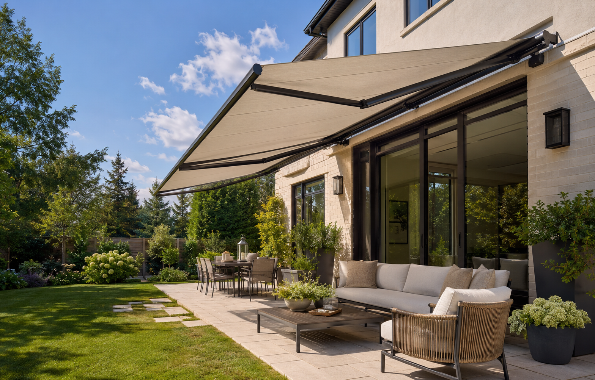

Retractable Awnings
Manual and motorized patio awnings that provide shade when you want it and retract neatly when you do not.
Request a quote →AWNING INSTALLATION ACROSS TORONTO & THE GTA
Premium residential and commercial awnings, pergolas, gazebos and canopies—supplied and professionally installed.
★★★★★ Trusted craftsmanship since 2019

OUR SHADE SOLUTIONS
From a simple manual patio awning to a motorized commercial shade system, every project is planned around your property, style and budget.
Manual and motorized patio awnings that provide shade when you want it and retract neatly when you do not.
Request a quote →Durable permanent awnings designed for dependable weather protection and lasting curb appeal.
Request a quote →Professional shade systems and storefront canopies for restaurants, retail spaces, offices and commercial properties.
Request a quote →Stylish outdoor structures that create a comfortable, defined space for relaxing, dining and entertaining.
Request a quote →Practical residential and commercial canopy solutions for patios, entrances and outdoor gathering areas.
Request a quote →Awning inspection, maintenance, repairs and replacement fabrics that refresh and extend the life of your system.
Request a quote →HOW IT WORKS
Tell us your preferred size, style, location and exterior finish. We will help you choose the right shade solution and provide clear pricing.
Select your size, fabric colour, projection and manual or motorized operation. Your awning is ordered specifically for your project.
Our insured team installs your awning carefully using the proper mounting method, then shows you how to operate and care for it.
WHY CHOOSE TIPTOP AWNINGS?
We combine premium products with careful installation and dependable customer service. Every property is treated with respect, every mounting detail matters, and every project is completed with long-term performance in mind.
LOCAL AWNING INSTALLERS
TipTop Awnings provides residential and commercial shade solutions throughout the Greater Toronto Area. Contact us to confirm availability for your property.
Check Your Area →ABOUT TIPTOP AWNINGS
Since 2019, TipTop Awnings has helped homeowners and businesses create cooler, more comfortable and more functional outdoor spaces. We supply and install retractable awnings, fixed awnings, pergolas, gazebos, canopies and custom sunshade systems across Toronto and the GTA.
Our reputation is built on reliable communication, honest advice, careful workmanship and clean installations. Whether you are shading a backyard patio or improving a commercial storefront, we deliver a solution designed to look great and perform for years.
FREQUENTLY ASKED QUESTIONS
Have another question? Call us and we will help you plan the right awning for your space.
Call (416) 277-3191 →Retractable awnings are ideal when you want flexible sun protection, while fixed awnings provide year-round coverage. We will review your wall surface, space, preferred projection and budget before recommending the right option.
Yes. We supply and professionally install manual and motorized retractable awnings in a range of popular sizes, colours and projections.
Most awnings can be installed on brick, stucco or siding when the correct mounting method and structural backing are used. We assess the exterior before confirming the installation plan.
Most standard installations are completed in one visit after the awning arrives and weather conditions permit. Timing varies with size, mounting surface and special site requirements.
Yes. Our installations include a workmanship warranty, and eligible products include the applicable manufacturer warranty. We explain the coverage for your selected system before installation.
Yes. We provide awnings, entrance canopies and custom shade solutions for storefronts, restaurants, offices and other commercial properties across the GTA.
FREE CONSULTATION
Call or email TipTop Awnings for a straightforward quote on your residential or commercial shade project.